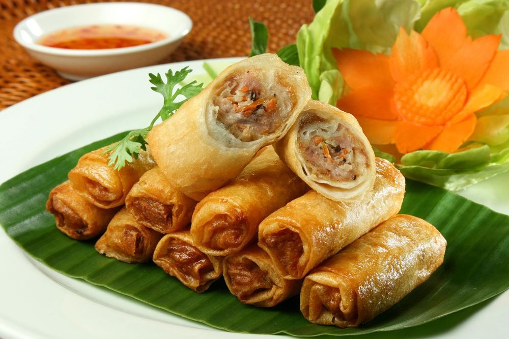
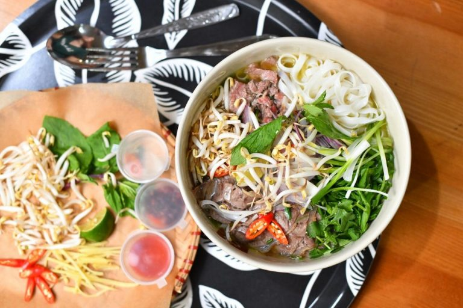
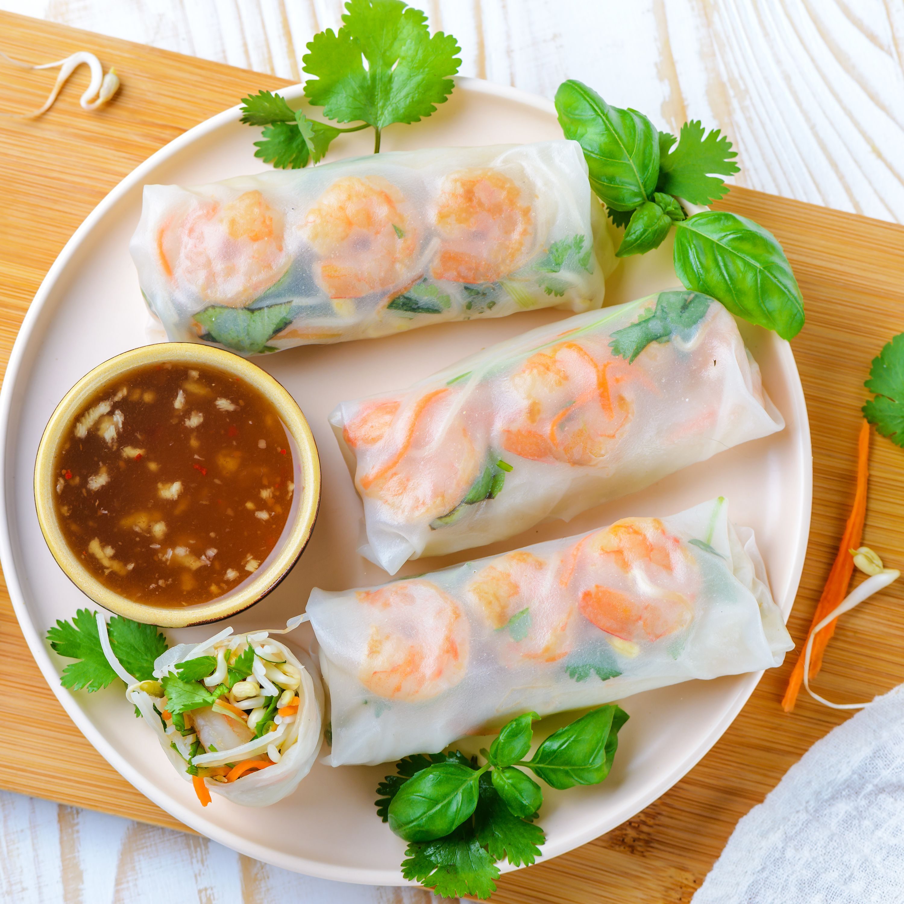
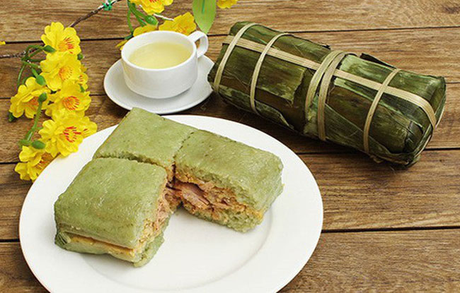

ВЬЕТНАМСКАЯ КУХНЯ
Вьетнамская кухня характеризуется использованием рыбного соуса, соевого соуса, риса, свежей зелени, фруктов и овощей.
Вьетнамские рецепты включают широкий набор зелени, в том числе лимонное сорго, мяту, вьетнамскую мяту, листья кориандра и базилика.
Вьетнамские супы Фо Бо
Фо бо — одна из самых популярных версий супа фо и фактически его синоним. Он состоит из насыщенного мясного бульона, фо-лапши, лука, кинзы, ростков бобовых, базилика и множества специй.
Перец чили, бадьян, анис, корица, гвоздика — это далеко не полный набор приправ для ароматного супа. Всегда горячий и пряный, он не только насыщает, но и придает силы на целый день.

Спринг-Роллы
Эти блинчики с начинкой представляют собой освежающую замену обычных жареных блюд и стали любимым блюдом всей семьи.
Они великолепны в качестве прохладной летней закуски и восхитительны в одном или обоих соусах.

БаньТььнг
Баньтьынг — блюдо вьетнамской кухни, пирог из клейкого риса, бобов мунг и свинины.
Его происхождение объясняется в легенде о Ланг Льеу, наследнике шестого хунгвыонга.
Он стал хунгвыонгом благодаря тому, что создал баньтьынг и баньзэй, символизирующих Небо и Землю.
